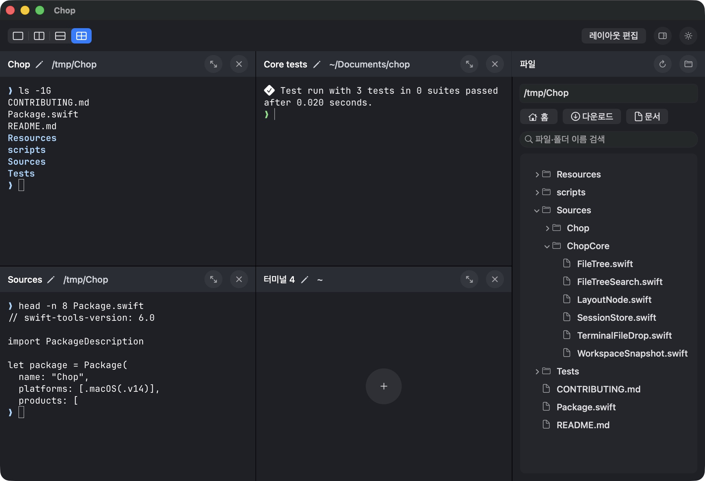

<!doctype html>
<html lang="ko">
<meta charset="utf-8" />
<meta name="viewport" content="width=device-width, initial-scale=1" />
<title>Chop macOS showcase</title>
<style>
  * { box-sizing: border-box; }
  html, body { margin: 0; background: #183b91; }
  .desktop {
    width: 1280px;
    height: 720px;
    display: grid;
    place-items: center;
    overflow: hidden;
    background: url('./wallpaper.png') center / cover;
  }
  .window {
    display: block;
    width: 920px;
    height: auto;
    border-radius: 13px;
    box-shadow: 0 26px 52px -10px rgb(7 15 43 / 45%),
                0 6px 18px rgb(7 15 43 / 18%);
  }
</style>
<main class="desktop" aria-label="macOS 배경 위의 실제 Chop 창">
  
</main>
<script>
  const variants = {
    dark: ['grid-dark.jpg', '다크 격자'],
    light: ['grid-light.jpg', '라이트 격자'],
    tabs: ['tabs-light.jpg', '라이트 탭'],
  };
  const key = new URLSearchParams(location.search).get('view') || 'dark';
  const [file, label] = variants[key] || variants.dark;
  const screenshot = document.querySelector('.window');
  screenshot.src = './captures/' + file;
  screenshot.alt = 'Chop ' + label + ' 보기의 실제 앱 창';
</script>
</html>
